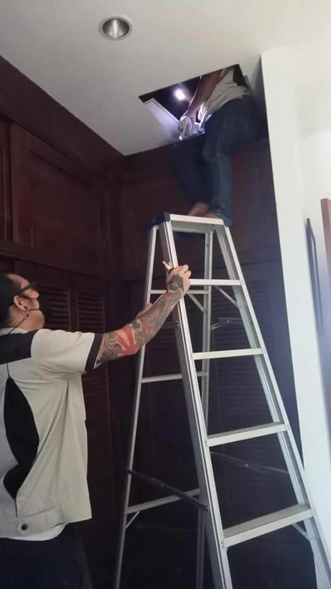

Termite Control
Nano-particle barrier technology eliminates termite colonies without drilling. Results in 7–10 days with a 12-month guarantee.
From termites inside your walls to mosquitoes in your garden - our herbal nano-technology targets each pest species with precision-engineered treatments.
Every service uses our proprietary herbal nano-technology - no synthetic pesticides, no harmful residue, no risk to your family.
Nano-particle barrier technology eliminates termite colonies without drilling. Results in 7–10 days with a 12-month guarantee.
Herbal gel bait targets cockroaches at their nesting sites. No broadcast spraying, no contamination of food surfaces.
Integrated exclusion, trapping, and herbal repellent barriers. We remove existing populations and prevent re-entry permanently.
Herbal misting for gardens and outdoor areas. Targets breeding sites and adult mosquitoes. Safe for children and pets.
Colony-targeting nano-bait destroys ant nests from the inside out. Effective against carpenter ants, fire ants, and common household species.
Comprehensive property survey identifying all current and potential pest risks. Written report included. Completely free of charge.

Termites are relentless wood-eating insects that cost Thai homeowners billions of baht annually in structural repairs. In Chiang Mai's warm, humid climate, termite infestations develop quickly and silently - often not discovered until significant damage has occurred. Traditional pest control methods rely on drilling holes into walls and floors to inject chemical termiticide, a process that damages your property, disrupts your home, and exposes your family to toxic chemical residue.
Our nano-barrier termite treatment eliminates the colony through an entirely different mechanism. Rather than creating a chemical barrier that termites can detect and circumvent, our herbal nano-particles are applied to accessible surfaces and perimeter soil where they naturally migrate through capillary action into the timber, voids, and mud tunnels where the colony lives. Once inside the colony territory, these microscopic actives disrupt the termite's communication systems and feeding cycles. The result: complete colony elimination - including the queen - within 7 to 10 days. The entire nest dies from the inside out, not just the insects that contact the surface.
The technology works equally well on subterranean termites (the most destructive species in Northern Thailand) and dry-wood species. Treatment is safe for children, pets, and houseplants. Your family can remain in the home during the entire process. Every termite treatment comes with a 12-month written guarantee.
Concerned that your property may already be infested? The warning signs include mud tubes along walls and foundations, hollow-sounding timber, discarded wings near windows and doors, or sawdust-like frass near wood joints.
Get a Free Inspection
Cockroaches are among the most adaptable and prolific pest species in Thailand. German cockroaches, in particular, develop resistance to conventional synthetic insecticides within just a few generations of exposure. This means that relying on over-the-counter sprays leads to an escalating cycle where you need stronger and more frequent applications, all while spraying chemical residue directly onto the surfaces where you prepare food and where your children play.
Our herbal nano-gel bait uses an entirely different mode of action. Rather than trying to kill cockroaches on contact through broadcast spraying, we place precision-applied gel at the exact harbourage points where cockroaches rest and breed. When a cockroach feeds on the bait, it carries the active compound back to the nest through their food-sharing behaviour. This secondary transfer kill mechanism eliminates the entire colony - nymphs, adults, and reproductives - from the inside out. The colony collapses because the insects themselves distribute the active compound throughout their network.
Because our treatment involves gel application at specific points rather than spraying surfaces, there is zero chemical residue on countertops, food preparation areas, cutting boards, or children's play surfaces. The treatment takes under one hour and your family need not vacate the property. We handle German, American, and Oriental cockroach species with equal efficacy. The same methodology is compliant with food service industry standards, making it the ideal solution for restaurants, hotel kitchens, and commercial food operations throughout Chiang Mai.
Is your kitchen hosting unwanted visitors at night? Cockroaches are nocturnal and leave droppings that resemble ground black pepper, concentrated near food sources and in dark crevices.
Book a Treatment
Rodent infestations pose multiple threats to your household beyond simple nuisance. Rodents contaminate food supplies with their droppings, which carry harmful pathogens including leptospirosis, a potentially serious bacterial infection. They gnaw through electrical wiring - a fire hazard that can go undetected until catastrophic damage occurs. They damage structural timber, insulation, and plumbing. A single female rodent can produce up to 10 litters per year, meaning a small infestation rapidly becomes a major problem if not addressed quickly and comprehensively.
One-off trapping or poisoning provides only temporary relief. Rodents will continue to enter the property through the same entry points unless those gaps are identified and sealed. Our integrated rodent management programme begins with a thorough property survey that maps all entry points, identifies rodent activity patterns, and assesses conducive conditions (food sources, shelter, water access). We then deploy targeted trapping using both humane and conventional trap options based on your preference.
Simultaneously, we apply herbal repellent barriers at all identified entry points to discourage re-entry. Finally, we provide you with a detailed written exclusion recommendations report that documents entry points we've identified and the structural modifications needed to permanently prevent future rodent access. This multi-pronged approach - immediate removal of existing populations plus structural exclusion of future invaders - is what prevents the costly cycle of repeated infestations. Every rodent programme includes a follow-up visit to verify trap success and assess the effectiveness of exclusion measures.
Hearing scratching sounds in your walls or ceiling at night? This is typically active rodent movement, and delay increases the risk of fire hazard from damaged electrical wiring.
Book a Survey
Northern Thailand's warm climate and seasonal monsoon rains create ideal breeding conditions for mosquitoes year-round. Unlike temperate climates where mosquito season has a defined start and end, Chiang Mai residents face active mosquito populations from March through December, with peak activity during the wet season. Mosquitoes are not merely an annoying nuisance - they are vectors for dengue fever, chikungunya, and other arboviral diseases. A mosquito bite that seems harmless today can develop into serious illness within days.
Traditional mosquito management relies on DEET-based repellents (which require constant reapplication) or synthetic pyrethroid sprays (which damage the garden ecosystem and harm beneficial insects). Our integrated mosquito control programme takes a different approach. We begin by auditing your property to identify all breeding sites - even small accumulations of standing water in plant saucers, gutters, or poorly drained areas can produce hundreds of mosquitoes. We treat identified larval habitats with bio-larvicide, targeting developing mosquitoes before they reach adulthood.
We then reduce active adult populations through targeted herbal misting applied to garden foliage, eaves, and outdoor resting sites. Unlike broadcast spraying, our application methodology targets mosquito resting and breeding areas specifically, meaning the herbal formula remains active in treated areas while posing no risk to children, pets, or beneficial garden insects. The treatment makes outdoor spaces genuinely usable - customers report enjoying gardens and patios mosquito-free for 4-6 weeks following each application. We offer monthly maintenance programmes perfectly suited to Chiang Mai's extended mosquito season.
Are evening outdoor activities becoming impossible due to mosquito swarms? This is a solvable problem with the right comprehensive approach.
Book a Treatment
Ants are among the most persistent household pests in Thailand. Unlike cockroaches or termites, which people often don't notice until problems become severe, ants are immediately visible - marching across your kitchen counters, invading food storage, and establishing trails through your home. Over-the-counter sprays provide only temporary relief. When you spray an ant trail, you kill the visible foragers, but the colony remains intact in its hidden nest. Within 48 hours, the colony has re-established foraging trails, often using alternative routes that were previously inaccessible. This cycle of spraying and reinfestation can continue indefinitely.
The fundamental problem with spray-based ant control is that it targets only the 2-3% of the colony that is out foraging at any given moment. The queen - who lays up to 2,000 eggs daily - remains safe in the nest. Our nano-bait system solves this problem through elegant biology. Worker ants carry our herbal nano-gel bait back to the nest as food. The bait is distributed throughout the colony via the ants' natural food-sharing behaviour. This secondary kill mechanism targets the queen and all reproductives, causing complete colony collapse from the inside out.
We target carpenter ants (destructive to timber structures), fire ants (whose stings cause severe reactions in some individuals), pharaoh ants (extremely small and difficult to control), and ghost ants. Treatment involves precision gel application at nest sites and along active foraging trails - no broad surface spraying that creates chemical residue. The same methodology works for both indoor infestations and outdoor ant problems around garden borders and foundations. Most ant colonies respond to treatment within 5 to 7 days.
Are ants marching across your kitchen at predictable times each day? This indicates an active, organised colony that will expand rapidly without intervention.
Book a TreatmentBook a free property inspection. Our certified technician identifies every pest risk and recommends the right programme - no obligation.